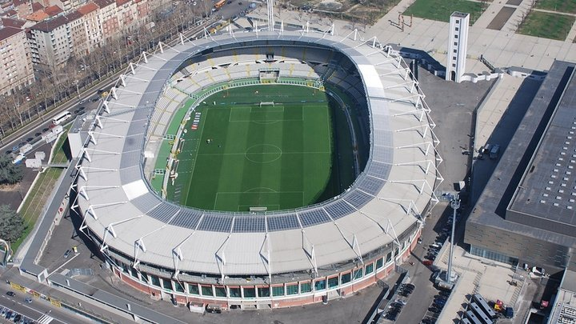

Treinador: Roberto D´Aversa
A trajetória de Roberto D'Aversa é definida por uma rigorosa exigência competitiva e uma vincada capacidade de organização tática em cenários de alta pressão, afirmando-se como um treinador de perfil disciplinado, pragmático e focado na máxima rentabilização dos equilíbrios coletivos.
Estádio: Olimpico Grande Torino
O Estádio Olimpico Grande Torino ergue-se como um santuário de memória e fervor identitário no futebol italiano, pautado por uma profunda carga mística e uma atmosfera de comunhão comunitária, afirmando-se como um recinto de perfil histórico, passional e emocionalmente enraizado na alma de Turim.

Estilo de Jogo:
O estilo de jogo de Roberto D'Aversa no Torino é definido por uma matriz estruturada de forte contenção defensiva e uma dinâmica coletiva focada nas transições rápidas, afirmando-se como um modelo de perfil pragmático, vertical e de uma elevada disciplina posicional.
"Sempre e solo Forza Toro!"